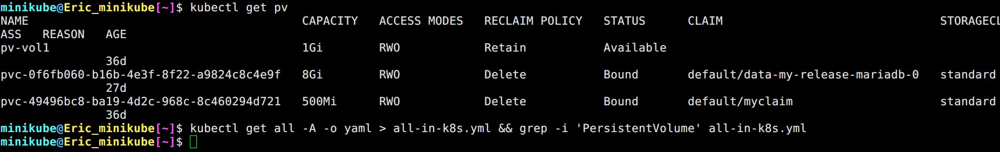

CKA Note Section 6 Cluster Maintence
Contents
117. OS Upgrades
如果我們要將某個 worder node 下線，做一些例行維護 (例如: OS Upgrade) 可以使用
|
|
來達成，原本在目標 worker node 的 pod 會被 re-schedule 到其它 worker node 上面。當維護完成再使用
|
|
來告訴 master node 我好了，可以把 pod 繼續 schedule 到我身上囉! 被調度出去的 pod 不會恢復回來。
如果單純要讓 master node 不要把 pod 調度過來 (mark as unschedulable) 的話則可以使用。
|
|
與 kubectl drain 差別在於不會 evction pod。
▲ 因為有 DaemonSet 的緣故造成 error。
▲ 使用 --ignore-daemonsets 即可忽略。pod 成功被 evction 到 mini-k8s-m02。
▲ 驗證 uncordon 之後原本的 pod 不會回來。 回不去了瑞凡
▲ kubectl drain mini-k8s-m02 --ignore-daemonsets --force 之後查看 worker node status 顯示 Ready,SchedulingDisabled。
120. Kubernetes Software Versions
▲ kube-apiserver, kubelet 版本會跟 Kubernetes release version 一樣，etcd, CodeDNS 是外部的專案則不會。
122. Cluster Upgrade Process
這個章節要說的是如何升級 Kubernetes cluster。
kube-apiserver是最重要的，各個元件都是與它溝通，所以以它為基準。 (我們設定成X)controller-manager能夠接受X-1。kube-scheduler能夠接受X-1。kubelet能夠接受X-2。kube-proxy能夠接受X-2。kubectl能夠接受X+1orX-1。
▲ 各個 K8s 元件能夠接受的版本差異度。
- Kubernetes 只會維護 (support)
X~X-2(總共三個版本)。 - 建議升級方式是逐次
X+1。
▲ 將 Kubernetes cluster 架設在不同環境，升級的方式也不同。看看人家公有雲
[kubeadm-upgrade] 1. 更新 Master Node
▲ 在 master node 上執行 kubeadm upgrade plan 可以列出更新計畫。 不過像 kubelet 就必須手動更新。
▲ 在執行 kubeadm upgrade apply v1.12.0 之前呢，我們必須先更新 kubeadm 本身。執行之後 kubeadm 會幫我們置換 control plane 上面各個元件的 container 但不包含 kubelet 這也是為什麼必須手動更新的原因
kubeadm upgrade apply v1.12.0 完畢後，使用 kubectl get nodes 會發現 VERSION 怎麼還是在舊版。原因是 kubectl get node 抓的是 kubelet 的版本，而不是 kube-apiserver 的版本。
[kubeadm-upgrade] 1.1 更新 kubelet
|
|
[小知識] Why --disableexcludes=kubernetes
我們拿 Kubernetes 官方提供的 Installation Guide 其中的 RHEL 來看。
|
|
Q: 為什麼在 kubernetes.repo 裡面要特別把 K8s 使用的三個 package exclude 呀?
(然後在安裝的時候才 --disableexcludes=kubernetes 這很奇怪呀)
Ans: 避免 yum upgrade -y 執行後，K8s 的這三個 package 意外被更新到，導致版本差異過大造成 cluster 爆炸。
原本只是小弟本人的猜測，後來看到 GitHub 上的這個 issue 間接被證實了~ (我真天才)
▲ 這個時候再次查詢，就會顯示新版本囉!
[kubeadm-upgrade] 2. 更新 Worker Node
|
|
126. Backup and Restore Methods
需要備份的項目有:
- Resource Configuration (就是 YAML file 啦)
- etcd database
- Persistent Volumes
本章節只會討論前兩項。
Resource Configuration
我們在 CKAD 的時候知道建立 K8s resource 有兩種方式 1) Imperative 2) Declarative，以備份的角度看當然是使用 Declarative 加上 Git 之類的版本控制會比較好。
但我們沒辦法保證每個使用者在建立 K8s resource 的時候都乖乖使用 kubectl create xxx --dry-run=client -o yaml > xxx.yml && kubectl apply -f xxx.yml
所以可以直接向 api-server 索取所有 K8s resource 並且匯出成 YAML file。
|
|
講師有另外提到 Kubernetes cluster 的備份工具 VELORO
Velero is an open source tool to safely backup and restore, perform disaster recovery, and migrate Kubernetes cluster resources and persistent volumes.

▲ 這是跟 Parin 大大聊天聊到的。kubectl get all -A 拿到的只是一些常用的 Kind 並沒有包含所有 resource，例如: PV, PVC, CRD, Ingress, SotrageClass …. 所以不能拿來當成完全備份呀!
etcd database
|
|
▲ 在 restore etcd database 之前，必須先停止 api-server。
|
|
因為 restore 會產生新的 etcd cluster configuaration (一個保護機制，避免覆蓋掉原有 db 的 --data-dir)，因此必須給定另外一個新的 dir，若不存在則會自動產生。 接著修改 systemd 的 conf，並且重啟。
Working with ETCDCTL
- 在講師搭建的練習 LAB 當中，
etcd都是以 static pod 部屬。 - 承上，
API version == 3。 - 上面提到的
etcdctl其實都省略了 TLS cert (還記得之前有說過，K8s 的各個元件溝通加密都是用 TLS 嗎)，少了這些參數就沒辦法拿到etcd的操作權限。 --cacert: trusted-ca-file--cert: TLS cert file (證書本人)--endpoint:etcd所在的 IP address。例如:--endpoints=[127.0.0.1:2379]--key: trusted-ca-key-file 密鑰
Snapshot using etcdctl options
大部分的日常使用 TLS cert 都是被 client side 拿來驗證 server side 身分，但其實 server side 也可以透過 TLS cert 對 client side 做認證。
除了 etcd 外，台灣有些證券商也是採用這種模式來保護下單安全 (金管會貌似沒有硬性規定使用 TLS cert)。
對 TLS 相關機制有興趣的，我會推薦這篇 《那些關於SSL/TLS的二三事》
Author 老柯
LastMod 2021-11-26